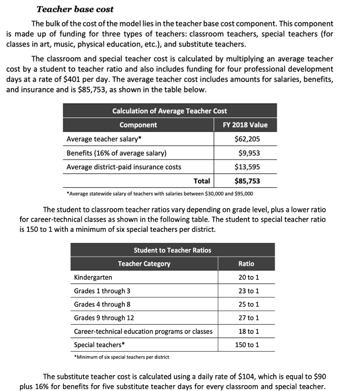
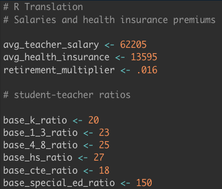
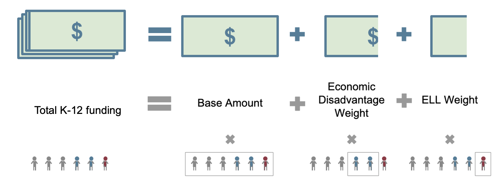
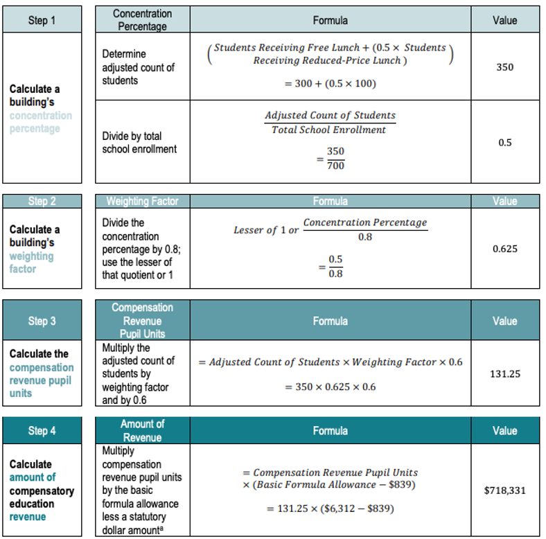
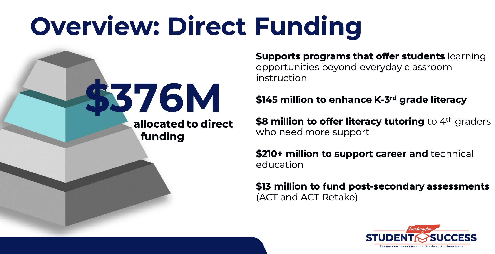
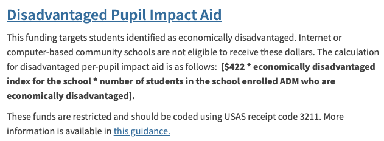
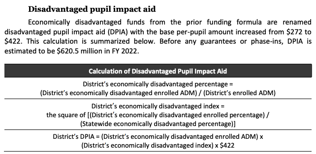
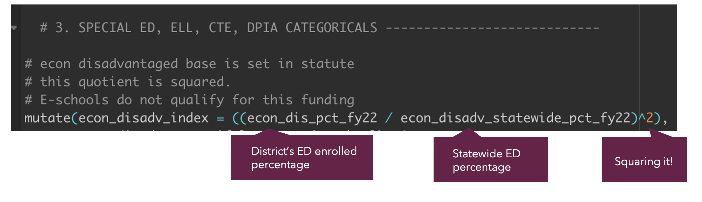
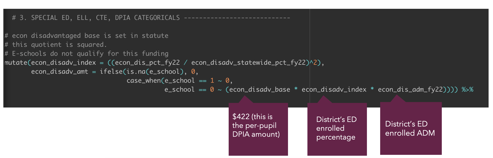
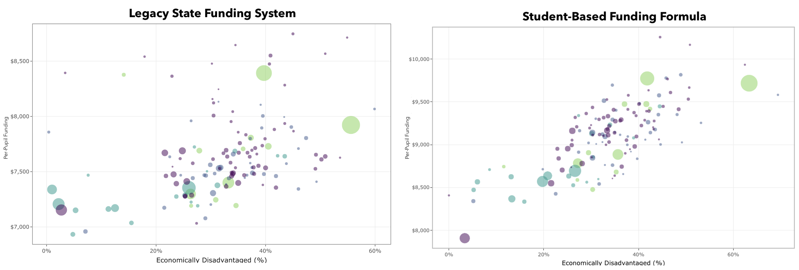

# funding formula table building --------------------
# 1. BASE COST COMPONENT ------------
# | 1a) teacher base ------------
# | 1b) student support base ----------
# | 1c) district leadership and accountability component of base cost ----
# | 1d) building leader cost -------------
# | 1e) Athletics co-curricular costs -----------
# | 1f) local capacity percentage -----------------
# | 1g) local capacity amount --------------
# 2. TARGETED ASSISTANCE ------------------
# 3. SPECIAL ED, ELL, CTE, DPIA CATEGORICALS ----------------------------
# 4. GIFTED FUNDING --------
# 5. SUPPLEMENTAL TARGETED ASSSISTANCE -----------
# 6. TRANSPORTATION ---------------
# 7. CREATE TOTALS -----------Modeling state funding policy proposals in R
Homework Review
Overview of Homework
- Any technical issues?
- Did your maps confirm what you already knew, provide new insights, or a little of both?
Small Group Discussion
In small groups, answer the questions below.
- If you had a magic wand, what’s on thing you would change about your state’s education funding formula?
- What are your advocacy goals around education finance (e.g. legislative change, coalition building, educate the public, etc.)?

Steps to building your state’s funding formula and modeling changes in R
Staying organized with a systematic approach will pay off as you build a funding model in R
Constructing a version of your state’s current funding system in R can be complicated, but following a few clear steps will help you in the long run:
- Start with an outline of your formula’s business rules
- In your script, hard-code key dollar amounts, weights, and ratios
- Build code for your state’s base amount (or equivalent)
- Build code for your state’s weighted funding (or equivalent)
- Build code for direct funding streams
- Calculate per-pupil amounts for comparison
Step 1: Create an outline of the funding formula in a word document or in R
- Create business rules that will help with guiding the structure of the code and comments
- Allows everyone to be on the same page about the data that is needed and how the various funding streams are calculated
Step 2: Hard code in the per-pupil base, weights, categoricals, and cut-offs
- Hardcoding in the variables protects against potential changes.
- If a value changes, you just need to change the hard coded variable rather than going through the formula and changing all of the numbers associated with that variable.
- Needed for building run the impact of potential changes to weights, per-pupil base, and direct funding.
Step 2: Example below is from Ohio’s state education funding formula (1/2)
Greenbook - Teacher Base Cost

R Code - Teacher Base Cost
Note: I didn’t hard code in $9,953 for benefits because it’s 16% of the average teacher salary. Now, if the avg_teacher_salary changes, I don’t have to change the variable.

Step 2: Example below is from Ohio’s state education funding formula (2/2)
# Ohio Special education weights
sped_1_weight <- 0.2435 # speech and language impairments and intellectual disabilities
sped_2_weight <- 0.6179 # specific learning disabilities and other health impaired
#(minor) & developmental delay (preschool only)
sped_3_weight <- 1.4845 # deafness, emotional disturbance
sped_4_weight <- 1.9812 # visual impairments, other health impaired (other)
sped_5_weight <- 2.6830 # multiple disabilities (other than deaf-blind),
#orthopedic impairments, deaf-blindness
sped_6_weight <- 3.9554 # autism and traumatic brain injury
# Ohio English Learner weights
el_1_weight <- .2104 # Students identified as EL and enrolled in schools in the
#US for 180 days or less
el_2_weight <- .1577 # Students identified as EL and enrolled in schools in the
#US for more than 180 days until the student achieves EL proficiency
el_3_weight <- .1053 # Students who achieved the proficient score on the EL exam Step 3: Build the base amount in R
The base amount will be the largest cost in a student-based formula. It reflects the cost of educating a single student and should be uniform across the state. However, sometimes base costs can be more complicated and involved multiple components.

Minnesota Example: Calculate the base amount in R
Calculating Minnesota’s per-pupil base amount is very straight forward:
- Step 1: Hard coded the per-pupil base amount
- Step 2: Created the Minnesota data frame and created the base by multiplying the per-pupil base amount by total ADM
# Step 1
# This is the per-pupil base amount that is used for calculating the total base and then the weights
pp_mn_base <- 6863
# Step 2
# Calculate the base amount
mn_base_funding_sch24 <- formula_data24 |>
# total base = school's total adm * 6863
mutate(mn_base_total = total_adm * pp_mn_base)Ohio Example: Calculate the base amount for charter schools in R
Calculating Ohio’s base amount is more complicated…
# Building the formula data
charter_funding_formula <- charter_formula_data |>
# 1. BASE COST COMPONENT ------------
# | 1a) teacher base ------------
mutate(teacher_base_cost = avg_teacher_salary + avg_health_insurance + (avg_teacher_salary * retirement_multiplier),
gr_k_classroom_teachers = adm_k_fy22 / base_k_ratio,
gr_1_3_classroom_teachers = adm_1_3_fy22 / base_1_3_ratio,
gr_4_8_classroom_teachers = adm_4_8_fy22 / base_4_8_ratio,
gr_9_12_classroom_teachers = adm_hs_fy2 / base_hs_ratio,
cte_classroom_teachers = adm_cte_fy22 / base_cte_ratio,
# sum total classroom teachers and cost
total_classroom_teachers = gr_k_classroom_teachers +
gr_1_3_classroom_teachers +
gr_4_8_classroom_teachers +
gr_9_12_classroom_teachers +
cte_classroom_teachers,
total_classroom_teachers_base_cost = total_classroom_teachers *
teacher_base_cost,
# calculate total special teachers and cost
# Community schools do not have a position minimum (6) for special education teachers
# like with traditional districts. Rather, it's the ADM divided by the ratio.
# When I was looking at the FY22 June CS Foundation Payment it used a different
# salary for special education teachers
total_special_teachers = total_adm_fy22/base_special_ratio,
total_special_teachers_base_cost = total_special_teachers * teacher_base_cost,
# calculate sub costs
sub_teacher_base_cost = (total_classroom_teachers + total_special_teachers) *
((sub_teacher_daily_rate * retirement_multiplier) + sub_teacher_daily_rate) * sub_teacher_days,
# calculate pd costs
teacher_pd_base_cost = (total_classroom_teachers + total_special_teachers) *
((teacher_base_cost - avg_health_insurance) / 180) *
teacher_pd_days,
# subtotal: teacher base cost
total_teacher_component_base_cost = total_classroom_teachers_base_cost +
total_special_teachers_base_cost +
sub_teacher_base_cost +
teacher_pd_base_cost,
teacher_base_cost_formula = ((total_classroom_teachers + total_special_teachers) * teacher_base_cost) +
teacher_pd_base_cost + sub_teacher_base_cost) |>
# | 1b) student support base ----------
# The student support base cost is a straight allocation for community schools ($874)
mutate(total_student_support_base_cost = total_adm_fy22 * student_support_allocation) |>
# | 1c) district leadership and accountability component of base cost --------
# The district leadership and accountability base cost is a straight allocation for community schools ($503)
mutate(total_district_leadership_base_cost = total_adm_fy22 * district_leadership_allocation) |>
# | 1d) building leader cost -------------
# The building leadership and operations base cost is a straight allocation for community schools ($1469)
mutate(total_building_leadership_base_cost = total_adm_fy22 * building_leadership_allocation) |>
# | 1e) Athletics co-curricular costs -----------
# The athletics base cost is a straight allocation for community schools ($163)
mutate(athletics_base_cost = ifelse(is.na(athletic_eligible), 0,
case_when(athletic_eligible == 1 ~ total_adm_fy22 * athletics_allocation,
athletic_eligible == 0 ~ 0))) |>
# | Aggregate base cost subtotal -----------
mutate(aggregate_base_cost = total_teacher_component_base_cost +
total_student_support_base_cost +
total_district_leadership_base_cost +
total_building_leadership_base_cost +
athletics_base_cost,
aggregate_base_cost_pp = aggregate_base_cost / total_adm_fy22) Step 4: Build the weighted funding amounts
The weights are additional funding for student groups with additional learning needs. Some formulas also have district-level adjustments to account for community conditions that affect costs, like sparsity or concentrated poverty.
Ohio Example: Building weighted funding for special education
Sometimes the weights can be straight forward. In Ohio, the special education is calculated as follows:
special education category ADM x applicable weight x statewide average base cost per pupil
# calculate the categorical funding amounts
# special education amounts
# total amount = sped category * statewide avg. pp base * applicable weight
mutate(sped_cat1_amt = swd_cat1_fy22 * statewide_base_pp_cost * sped_1_weight,
sped_cat2_amt = swd_cat2_fy22 * statewide_base_pp_cost * sped_2_weight,
sped_cat3_amt = swd_cat3_fy22 * statewide_base_pp_cost * sped_3_weight,
sped_cat4_amt = swd_cat4_fy22 * statewide_base_pp_cost * sped_4_weight,
sped_cat5_amt = swd_cat5_fy22 * statewide_base_pp_cost * sped_5_weight,
sped_cat6_amt = swd_cat6_fy22 * statewide_base_pp_cost * sped_6_weight) Minnesota Example: Building weighted funding for economically disadvantaged students
Sometimes the weight calculations are more complicated!

Don’t panic! Take it one step at a time!

Minnesota Example: Compensatory Revenue Calculation in R
#Build the compensatory revenue formula with the mn_joined spreadsheet and graph it
## Calculate the compensatory revenue per school and rebuild the model
comprev_schools_model <- mn_comprev_final |>
# Step 1: Split the reduced price student count in half because
# they are only worth .5 in the compensatory revenue formula
mutate(comprev_reduced_count = reduced_lunch * .5,
# Step 2:Add together the .5 reduced price count to the free
# count to get the corrected frpl number for the compensatory revenue formula
comprev_frpl_reduced_total = comprev_reduced_count + free_lunch,
#This is the new frpl % with .5 reduced price count
comprev_frpl_reduced_pct = comprev_frpl_reduced_total/enroll,
#Step 3: Divide by the weight factor by .8
comprev_weight_factor_step = comprev_frpl_reduced_pct/.8,
### I'm keeping this interim step so that I can track it
#Replace anything above 1 with 1 because of the formula
comprev_weight_factor = ifelse(comprev_weight_factor_step > 1,
1, comprev_weight_factor_step),
# determine the compensatory revenue pupil unit count
comprev_comp_pupil_unit = comprev_frpl_reduced_total*comprev_weight_factor*.6,
# determine the amount of money that the school generates
comprev_total = comprev_comp_pupil_unit * 5599,
# per-pupil amount for the school that generates the funds
comprev_pp = comprev_total/frpl_total) Step 5: Build in direct funding
Operates outside of the formula and does not go through the per-pupil base. Direct funding offers students additional educational opportunities by supporting programs that offer students learning opportunities beyond everyday classroom instruction.
- Math and reading programs
- College and career readiness
- Social-emotional learning

Alabama Example: Direct Funding
Just like with building weights, the direct funding can be straight forward.
# Alabama Classroom Instructional Support Funding -----
student_materials <- 900 # multiply this by the total instructional unit
technology <- 500 # multiply this by the total instructional unit
library_enhancement <- 157.72 # multiply this by the total instructional unit
professional_development <- 100 # multiply this by the total instructional unit
textbooks <- 75 # multiply this by total student ADM
## Alabama Classroom Instructional Support Funding calculations ------
al_direct_funding <- formula_data24 |>
# student materials funding
mutate(student_materials_amount = student_materials * total_instructional_units,
# technology funding
technology_amount = technology * total_instructional_units,
# library enhancement funding
library_enhacement_amount = library_enhancement * total_instructional_units,
# professional development funding
professional_development_amount = professional_development * total_instructional_units,
# textbook funding
textbooks_amount = textbooks * total_adm,
# total classroom instructional support
total_classroom_instructional_support = student_materials_amount + technology_amount +
library_enhancement_amount + professional_development_amount
+ textbooks_amount)Ohio Example: Direct Funding
Other times, the direct funding calculations can be more complicated.

Don’t panic! One step at a time!

Ohio Example: Direct Funding, more detail
You may need to consult multiple sets of documentation to uncover precise business rules for your state’s current funding system.

Ohio Example: Calculating the Disadvantaged Pupil Impact Aid (1/2)
Step 1: Find the calculation for the economically disadvantaged index:
District’s economically disadvantaged index = The square of (District’s economically disadvantaged percentage/Statewide economically disadvantaged percentage)
Step 2: Translate that into R code

Ohio Example: Calculating the Disadvantaged Pupil Impact Aid (2/2)
Step 3: Build out the Disadvantaged Pupil Impact Aid exception for e-schools in R

Step 6: Calculate the state total for each district and the per-pupil amount
- To calculate the total, add together the base cost, the weights, and the direct funding
- To calculate the per-pupil amount, divide the total funding by the total ADM
# Calculate Ohio charter funding total amount
charter_state_funding <- charter_funding_formula |>
summarise(total_charter_adm = sum(total_adm_fy22, na.rm = T),
state_base_cost = sum(aggregate_base_cost, na.rm = T),
state_dpia_cost = sum(econ_disadv_amt, na.rm = T),
total_econ_dis_adm = sum(econ_dis_adm_fy22, na.rm = T),
state_el_cost = sum(ell_funding, na.rm = T),
state_sped_cost = sum(special_ed_funding, narm = T),
state_cte_cost = sum(cte_funding, na.rm = T)) |>
mutate(state_base_pp = state_base_cost/total_charter_adm,
econ_dis_pp = state_dpia_cost/total_econ_dis_adm,
econ_dis_pp_second = state_dpia_cost/total_charter_adm)Why are per-pupil amounts important?
Per-pupil amounts are important to identify if funding formulas are equitably distributing funds

Small group activity
Building a funding formula in R
Your team has been tasked with building your state’s newly passed funding formula in R. Using the information in the table, hard code in the base, weights, and direct funding and then write out the R code that would be used to model the formula. Be sure to include headings and comments!!!

Homework
Reading
Coding task
Start building a version of your state’s funding formula in R! If you still have data cleaning work outstanding, please prioritize that this week. Once you do have clean data, start building out your state’s formula. Follow the steps we outlined in class, take it slow, and be sure to keep your code organized and commented well.
- Please be sure to add a
datafolder with a copy of the clean state data you created. - As always, once you’ve completed the assignment, be sure to commit and push to GitHub! (make sure the data your formula uses is also committed and pushed)